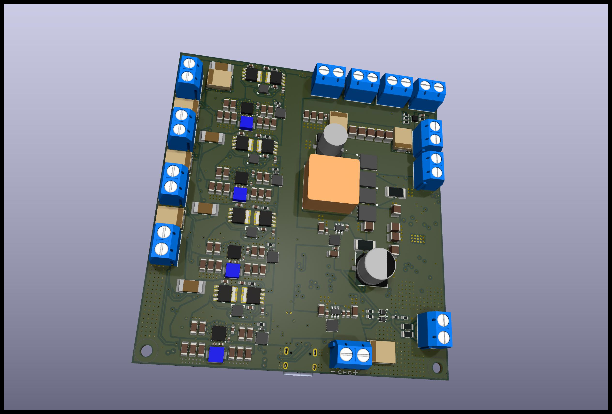
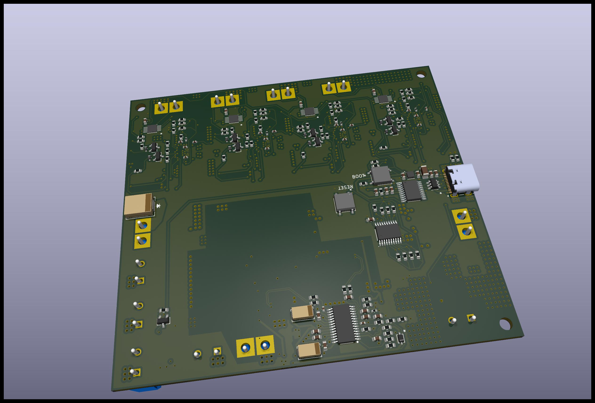
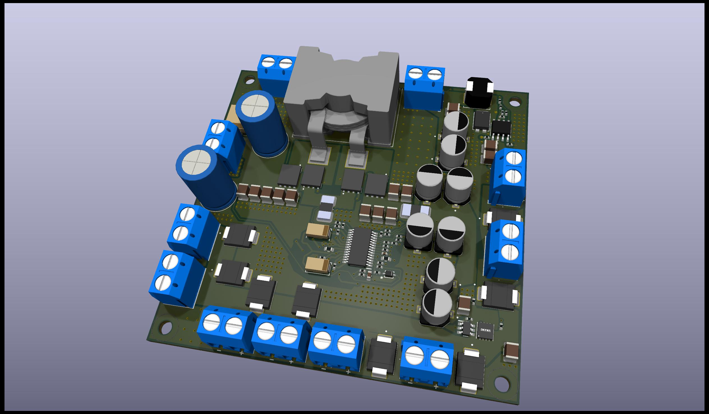
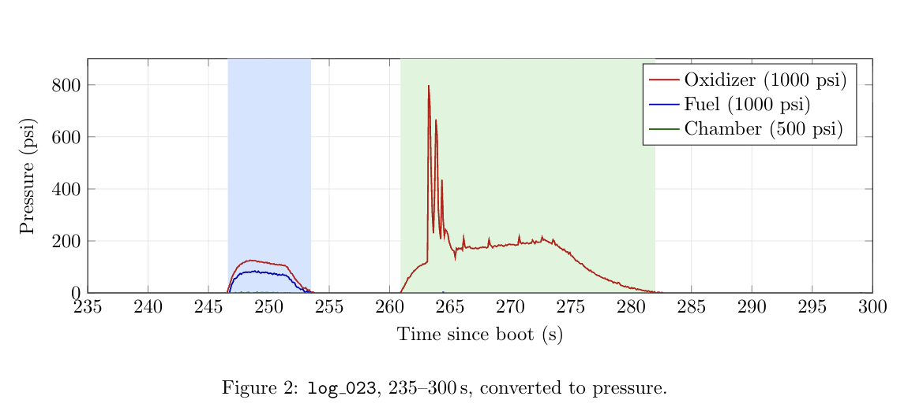
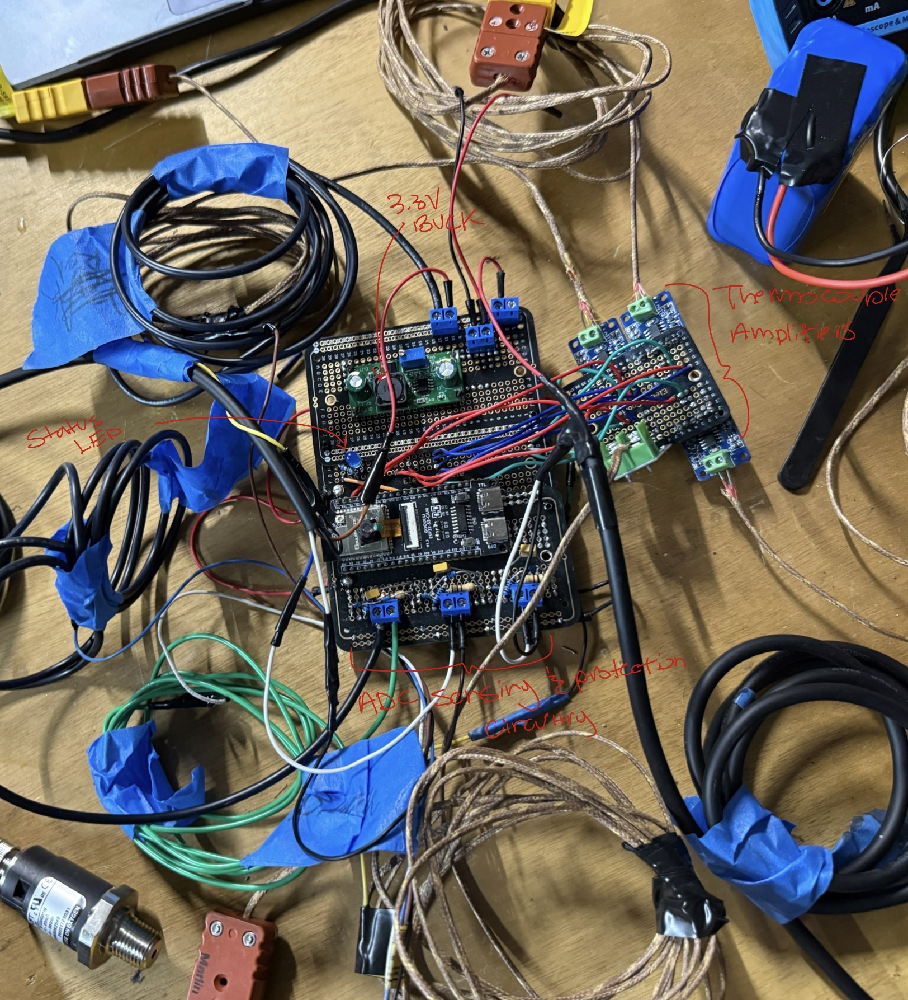
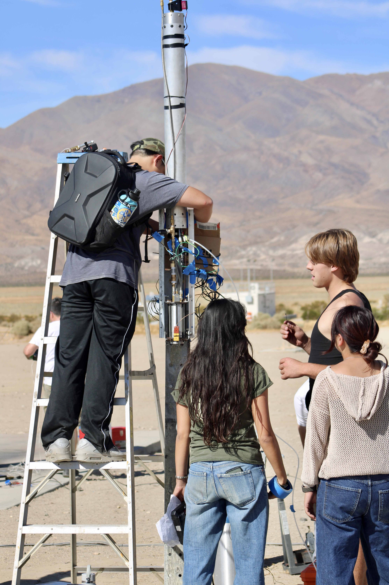
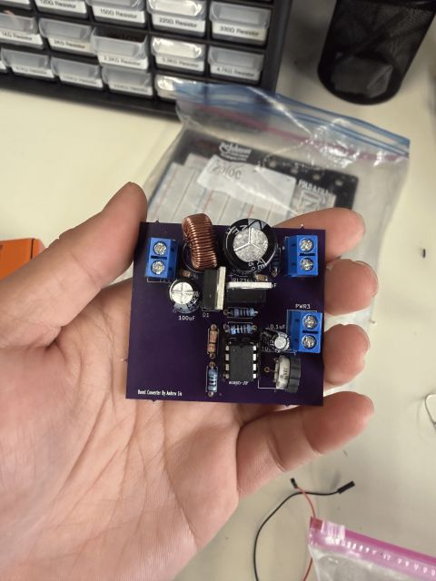
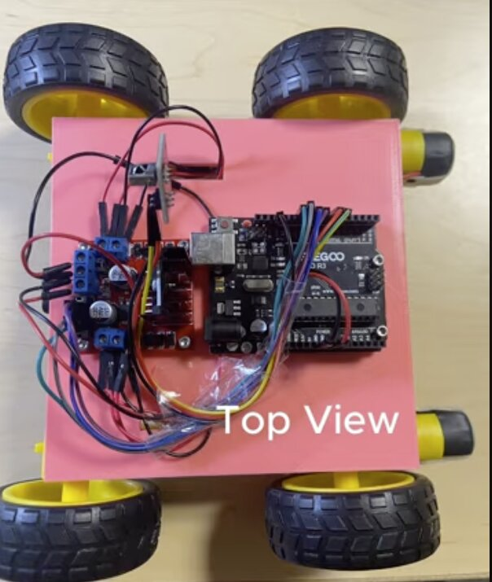

EE student at UC Santa Barbara building power electronics, avionic systems, and printed circuit boards. I have gone through multiple full design processes:
Studying an on-chip low-dropout (LDO) regulator that supplies a clean voltage to a voltage-controlled delay-locked loop. Applied control theory to analyze the regulator's compensation as proportional-derivative feedback, re-deriving its block diagram.
Currently Learning more about control theory and doing a literature review on other LDOs.
| Dates | September 2026 – Present |
| Lab | Biomimetic Circuits & Nanosystems, UCSB |
| Advisor | Luke Theogarajan |
As an intern at Hoplynk, a young startup, I took full ownership of a Power Distribution and Battery Monitoring PCB — from initial whiteboard design through schematics, testing, and integration into a real product. Being trusted to own something startup-critical, end-to-end, as an intern pushed me to think like a full-time engineer creating my own work, not just executing assigned tasks.
| Dates | June 2026 – September 2026 |
| Simulation | LTspice — battery charge/discharge modeling, failure point analysis |
| Test | DMM, vendor test software, radio hardware validation |



Lead electrical decisions for the team's avionics stack, from designing data acquisition systems to coordinating sensor and component testing. Write up design decisions and testing protocols so the team has a clear reference to build from.
| Team Lead | June 2026 – Present |
| Team Member | January 2026 – June 2026 |



Designed a 4-layer PCB in KiCad to log temperature, pressure, and acceleration data during rocket flight, selecting components for size, power draw, and sensor compatibility, and validating key parts — including the thermocouple amplifier — on breakout boards before committing to the layout.
Updates Currently building V2 to optimize the design and add live telemetry calculation and streaming capabilities.
| Timeline | April 2026 – May 2026 (V1) · V2 in progress |
| Tools | KiCad, DMM, Soldering Iron |
Designed and prototyped a 5V-to-12V boost converter circuit, reaching roughly 66% efficiency, with pulse-width-modulation control and closed-loop voltage feedback implemented on Arduino/ATtiny. Output was adjustable through a potentiometer-ADC interface, which triggered output voltage and duty cycle changes. Laid out the PCB with trace-width calculations and component placement driven by the power path.
Notes Efficiency was capped by switching losses and the asynchronous topology — the diode's high forward-voltage drop was the main culprit. A synchronous design would fix this: swap the diode for a MOSFET driven by the complement of the existing gate signal, cutting conduction losses significantly.
| Timeline | March 2026 – April 2026 |
| Result | 5V → 12V, ~66% efficiency |
| Control | PWM, closed-loop voltage feedback, Arduino/ATtiny |
| Tools | KiCad, LTspice, soldering |

Built at the Santa Barbara Hackathon: a website that screens for plantar fasciitis risk by modeling ankle, knee, and heel joints in vector space using MediaPipe, then flagging risk against a 5-degree threshold benchmark developed for the project.
| Timeline | January 2026 |
| Stack | JavaScript, MediaPipe |
Designed and built a remote-controlled car around a microcontroller, programming motor control, steering, and wireless communication in the Arduino IDE, and using CAD plus 3D printing to design a custom chassis for mounting the electronics.
| Timeline | August 2025 – September 2025 |
| Stack | Arduino IDE, C++, CAD, 3D printing |

Designed and tested a rock-paper-scissors simulator with classmates using an Arduino kit. Flex sensors sewn into a glove detect the wearer's hand shape to register their move against the computer, with results shown live on an LCD.
| Timeline | February 2025 – March 2025 |
| Affiliation | UC Santa Barbara |
| Stack | Arduino, flex sensors, LCD display |
| My role | Learned the components needed for the build and built the circuit during team sessions |